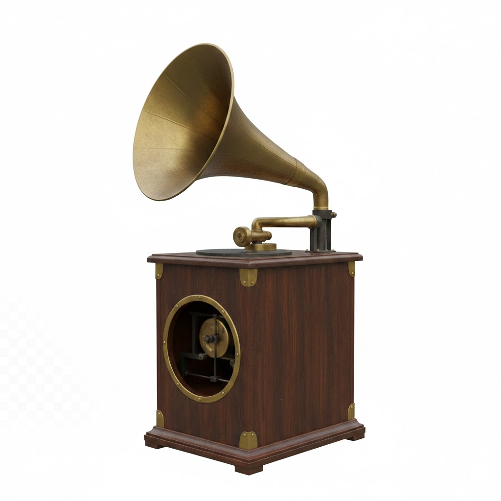

A primeira gravação da história
Por: Giulliana Cestari
Dezessete anos antes de Edison inventar o fonógrafo, Édouard-Léon Scott gravou uma voz humana cantando Au Clair de la Lune. O detalhe: ele não pretendia que fosse ouvida, apenas visualizada em papel. Só em 2008 conseguiram converter o traçado em som.
Fonte: First Sounds